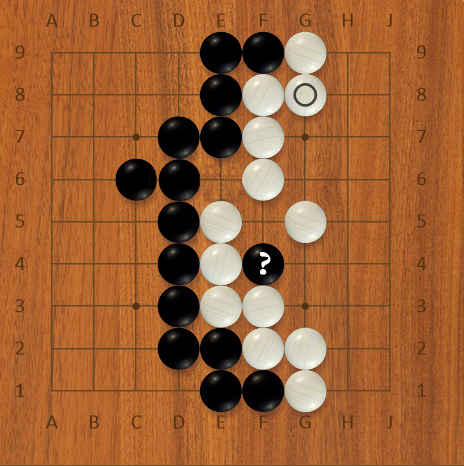
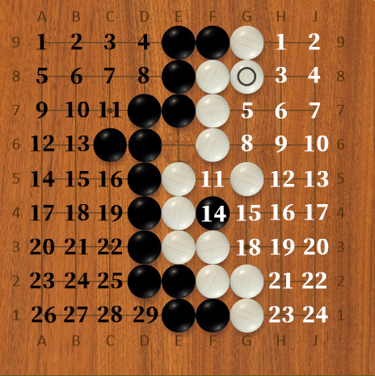

Each player has the right to pass (literally say pass) instead of placing a stone.
If both player pass consecutively, the game is over and we count the score.
Yes, you got it right. The game ends only when neither player wants to play further. Then, each player gets:
1 point for every:
- Empty intersection surrounded by stones of his/her color (so be carefull not to play inside your own territory, unless you have to)
- stone he/she captured. AND stones that remained in his/her territory and have no chance of surviving
That sounds easy, but it is also easy to screw it up. So before you pass you should make sure that the game is actually over. That means there is no move that could bring any points. Most notably:
Your browser sucks. Download something up to date.
Lets say we ended like this, then both players passed:

First question is: What about that lone stone in what we assume is white's territory? Well, that sone is dead. There is now no way for black to save that stone and white could capture it if she/he needed to. White now adds that stone to her/his prisoners (remember +1 point for each prisoner)
You do not have to actually capture every last dead stone in your territory. It will be counted as a prisoner anyway.
Playing inside your own territory when you do not need to costs you a point (only empty intersections count for points).
How do I know that one stone is dead?
Admitadely, This comes a little bit with experience. Any seasoned Go player can very quickly see the few possible variations and that they lead nowhere. Sometimes it can be tricky, but this is a simple case. Look for these red flags:
- It is only one or small handfull of stones.
- It is not surrounding any territory (this is a big tell!)
- All around are opponent's well connected stones and your stone is looking sad
If you are not sure if a stone is or isn't dead, well then do not pass, play it out, until it is obvious. But we will talk about alive/dead groups more soon, so do not get too anxious if you do not see it.
Now we only count the empty spaces that are fully surrounded by stones of one color, and that's it.
Let me help you with that:

That one space in the middle? Does not count for either color. Remember only territory fully surrounded by one color can be counted. In real game one of the players would just fill it with a stone, so it would not get in the way. On the internet you do not have to.
So, who do you think won? Say it was an ordinary game and apart from the one black stone there were no captures.
Luckily for us who play online, the computer counts it for us :).
And here comes the curveball. But I had to tell you sooner or later. These things I just taught you apply for Japanese scoring... Yeah. Go has several rulesets and Japanese are arguably the most popular in Western Europe.
Does that mean you cannot play with someone who was taught Chinese scoring? Luckily, no! All the basic principles are the same, and unless you played something very weird the result will be same as well. So it almost does not matter what rules you know. And if I were you I would not bother with them right now.
But if you are really, really curious about the differences, you can check them out here
But if you are really, really curious about the differences, you can check them out here
Actually, let me get back to this one later
EZ, I got this, what's next?